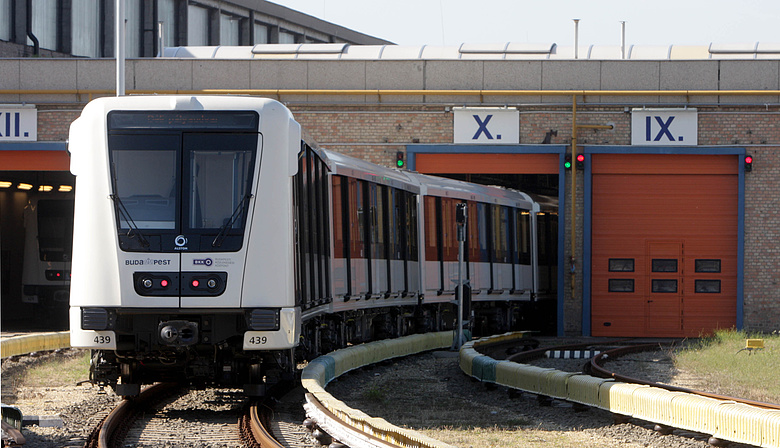

Az M2-es metróvonal
Az M2-es metróvonal (kelet-nyugati metróvonal) a budapesti metró második vonala a Déli pályaudvar és az Örs vezér tere között. Építését 1950-ben kezdték el; az első szakaszt a Fehér út (Örs vezér tere) és a Deák tér között 1970-ben, a második szakaszt a Deák tértől a Déli pályaudvarig 1972-ben adták át.
Története
A földalatti vasútépítés gondolata és megvalósítása egyidős a londoni földalatti vasútvonal születésével. 1860-ban kezdtek hozzá az építéséhez és 1863-ban helyezték üzembe az első földalatti vasutat. London után elsőként az európai kontinensen a millenniumi kiállításra készült el Budapesten a Sugárút alatt haladó földalatti kéregvasúti jellegű Millenniumi Földalatti Vasút. A belváros és a Városliget közötti kapcsolatot teremtette meg. A második világháború végéig a további fejlődés nem folytatódott.
A 3 éves terv sikere érlelte meg az ország vezető szerveinek döntését, hogy Budapesten föld alatti gyorsvasutat kell építeni. 1949-ben megkezdődött a metró törzshálózatának, illetve első vonalának tervezése.
A budapesti metróhálózat építését az 1950. szeptember 17-i minisztertanácsi határozattal rendelték el. A tervek szerint a metró a Népstadion (a mai Puskás Ferenc Stadion) és a Déli pályaudvar állomás között közlekedett volna. A Népstadionnál akartak közös végállomást kialakítani a Gödöllői HÉV-vel, amelynek nyomai a mai napig láthatók (4 vágány az állomáson). A Gödöllői HÉV a két külső vágányra érkezett volna, melyről egy rámpán a Keleti pályaudvar üzemi területére jutott volna ki, ahol visszafordult volna. Az egyik ilyen rámpa a '90-es évek végéig megvolt, de a benzinkút építése miatt betömték.
A földalatti vasútépítés gondolata és megvalósítása egyidős a londoni földalatti vasútvonal születésével. 1860-ban kezdtek hozzá az építéséhez és 1863-ban helyezték üzembe az első földalatti vasutat, azonban ez még gőzvontatású volt. A budapesti Millenniumi Földalatti Vasút a világ első villamos hajtású, egyben a kontinens első földalatti vasútjaként 1896. május 2-án került a nagyközönség használatába, és nagyobb fennakadások nélkül szolgál ma is. 1973-ig a vonal hossza 3700 méter volt, 9 földalatti és 2 felszíni megállóval. A szerelvények 2 perces időközzel közlekedtek, a legnagyobb mért napi utasszám 34 526 fő volt. A II. világháború végéig a további fejlődés nem folytatódott. Az akkori szokások szerint a földalatti vasút bal oldali közlekedésű volt, az áttérés a forgalomirányító és biztonsági rendszerek átépítése nélkül lehetetlen volt. Erre a millenniumi földalatti korszerűsítésekor került sor.
Felújítás
A több ütemből álló vonalfelújítás során 2004-ben a Kossuth Lajos tér és a Blaha Lujza tér, 2005-ben pedig a Batthyány tér, az Astoria és a Keleti pályaudvar metróállomás kapott új arculatot. Ez utóbbi három állomás felújítására kiírt nyílt, nemzetközi pályázat nyertese a STRABAG Rt. lett. 2006-ban a Déli pályaudvar, Moszkva tér (mai Széll Kálmán tér) és Deák Ferenc tér állomásokat, 2007-ben pedig az Örs vezér tere és Stadionok (mai Puskás Ferenc Stadion) közötti szakaszt újították fel.
A felújításhoz kapcsolódóan a vonalra új szerelvényeket is rendelt a BKV, amelyről 2006. május 30-án írták alá a francia Alstom céggel. A 22 darab, az M2-es vonalra érkező járműért 139 millió eurót fizet a BKV. A vonalra 2008-ban érkeztek volna meg a szerelvények, de egy nagy kínai megrendelés miatt a cég hátrébb sorolta a budapesti szállítást, így azok a régi kocsik közlekednek tovább, amelyek harmada már 2008-ra elérte a selejtezési szintet.[8] Az első új szerelvényt 2009. február 9-én mutatták be Budapesten, és ekkor kezdődött meg a tesztelés is, úgy tervezték, hogy 2009 második felében állhat forgalomba.